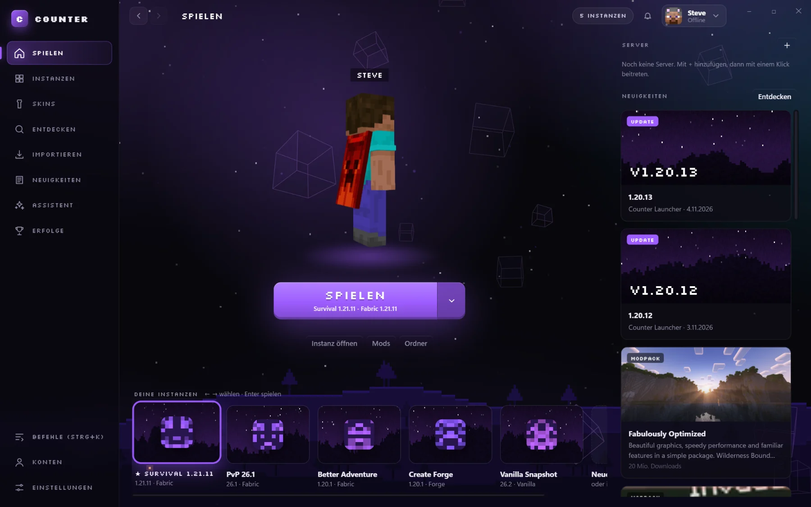
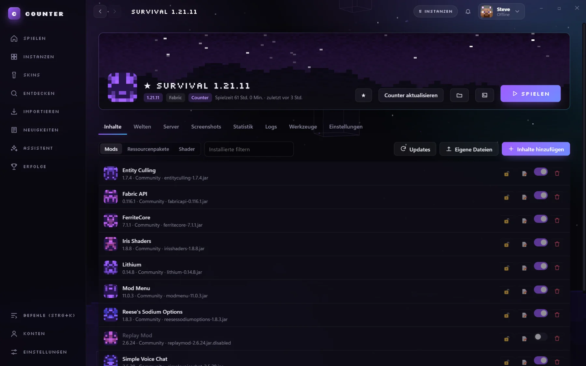
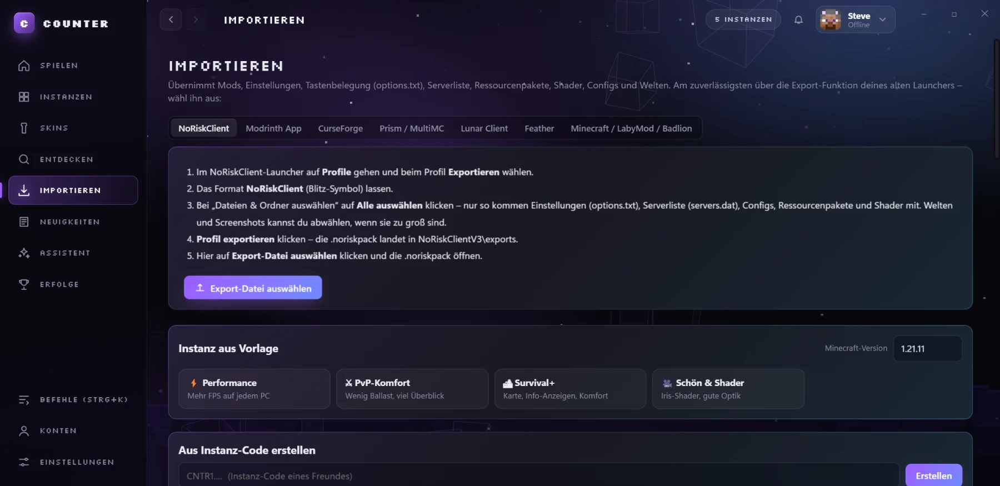
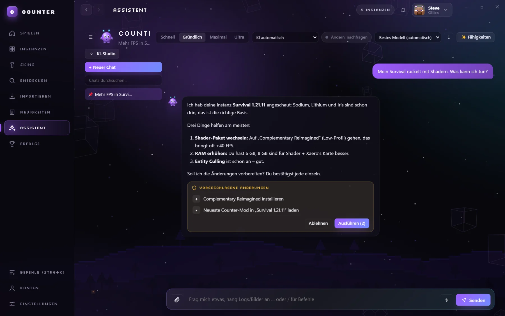
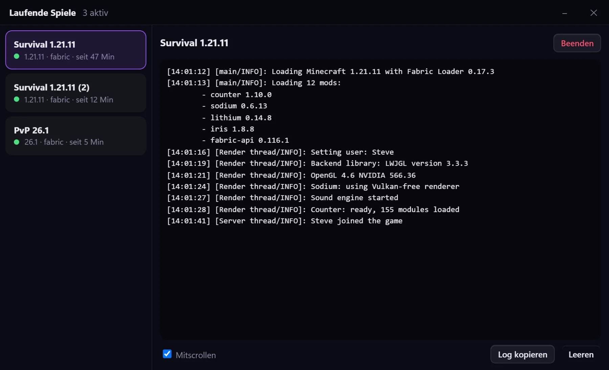
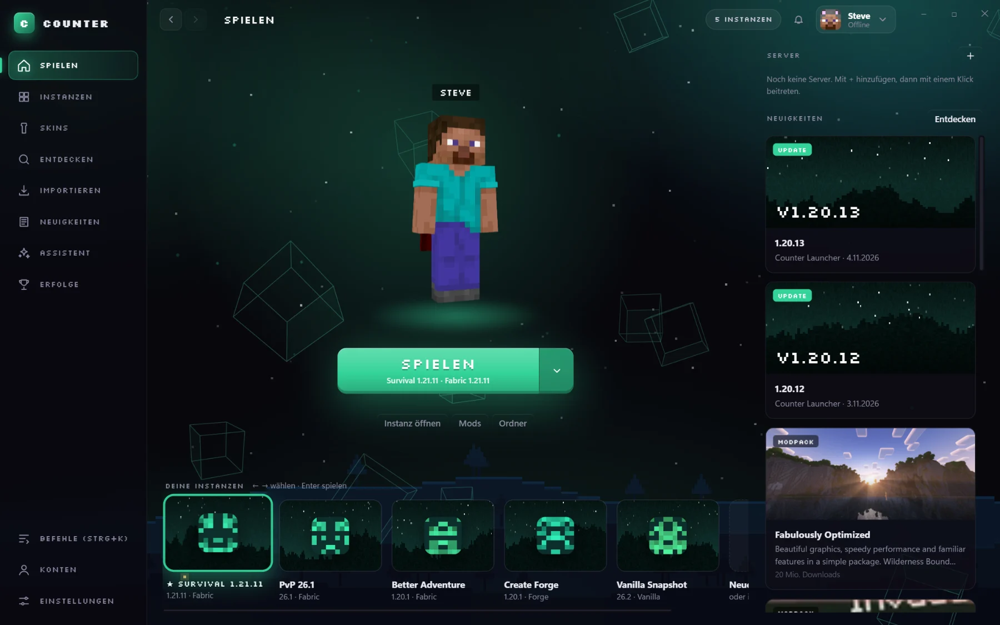
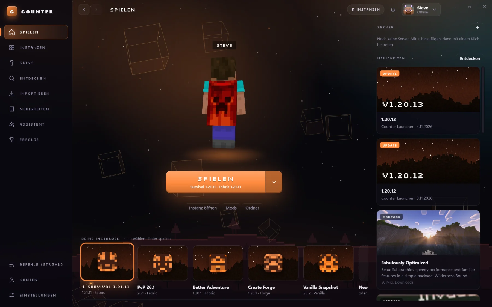
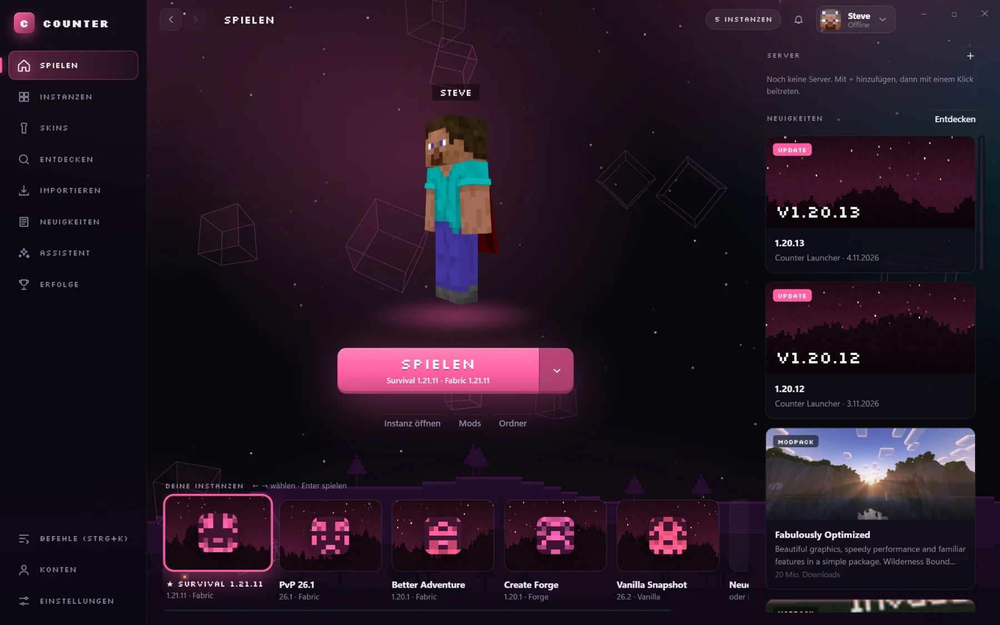

Login im Browser
Die Microsoft-Anmeldung läuft auf login.microsoftonline.com. Counter fragt nie nach deinem Passwort.
Counter Launcher · für Windows · kostenlos
Instanzen, Mods, Microsoft-Login und ein KI-Assistent an einem Ort. Wechsle von deinem alten Launcher mit allen Einstellungen, Servern und Packs – in ein paar Klicks.
Neueste Version · Windows 10/11 · Quellcode einsehbar

Mods mit einem Klick Mehrfachstart KI-Assistent CountiDas alles steckt drin




Counter-Mod · Fabric
Einzeln ein- und ausschaltbar. Im Launcher reicht ein Klick auf Counter aktualisieren, dann steckt die neueste Version in deiner Instanz.
Counti
Counti kennt deine Instanzen, sucht live auf Modrinth, liest deine Logs und erklärt Abstürze. Änderungen schlägt er vor – du bestätigst jede einzeln.
Design
Akzentfarbe, Hintergrund, Glas und Ecken stellst du selbst ein. Klick eine Farbe – diese Seite ändert sich mit.



Umstieg
Zu jedem Launcher zeigt Counter dir Schritt für Schritt, was du exportieren musst. Danach siehst du sofort, was angekommen ist: Mods, Einstellungen, Serverliste, Ressourcenpakete und Shader.
Sicherheit & Datenschutz
Die Microsoft-Anmeldung läuft auf login.microsoftonline.com. Counter fragt nie nach deinem Passwort.
Deine Anmelde-Tokens liegen verschlüsselt auf deinem PC (Windows-Schutz DPAPI) und gehen nie an Counter-Server.
Du kannst auf GitHub nachlesen, was der Launcher tut. Installer werden automatisch dort gebaut und veröffentlicht.
Deine Fragen an Counti gehen über den Counter-Server an einen KI-Anbieter. Dein Konto und deine Tokens sind nie dabei.
Kostenlos, in drei Minuten drin
Einmal installieren, dann spielen. Updates holt sich der Launcher von selbst.
Neueste Version · Windows 10/11 ·
Nur Windows, andere Systeme gibt es noch nicht.
Fragen?
Ja. Launcher, Counti und Counter-Mod kosten nichts.
Ja, für Online-Server meldest du dich mit deinem Microsoft-Konto an. Ohne Konto gibt es einen Offline-Modus zum Testen.
Fabric, Quilt, NeoForge und Forge sowie Vanilla. Jede Instanz hält ihre Version, Mods und Welten getrennt. Der Counter-Mod läuft auf Fabric.
Ja. Unter „Importieren“ gibt es Anleitungen für NoRiskClient, Modrinth App, CurseForge, Prism/MultiMC, Lunar, Feather und den offiziellen Launcher.
Noch nicht, Counter gibt es nur für Windows.
Auf der Issues-Seite bei GitHub. Sicherheitslücken bitte privat, wie in SECURITY.md beschrieben.